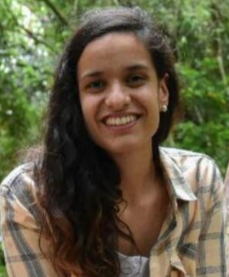

Crear un molino generador de energía eléctrica para utilización y análisis de datos.
Proyecto ambicioso en cuanto a investigación y absorción de nuevos conocimientos en áreas como la eléctronica, programación, Arduino y que a su vez tiene como base la utilización de un recurso natural como lo es el viento.
| Foto | Nombre | |
|---|---|---|
| Nicolás Tomasi | ntomasi92@gmail.com | |
|  | Alejandra Pintos | alesutat@gmail.com |
| Marcelo Casella | jmcasella@icloud.com |